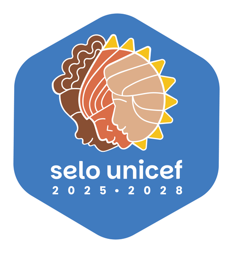

Brasil como contexto. Selo como universo.
EVIDÊNCIAS PARA CADA CRIANÇA
Olhar para os dados.
Enxergar o que importa.
Uma nova experiência para acompanhar a autoavaliação WASH nas escolas: do mapa à meta, do território à pergunta — com clareza, contexto e vontade de explorar.
31 questões estratégicas Dados rastreáveis Leitura territorial
Escolas elegíveis para a autoavaliação no Selo UNICEF
—
Autoavaliações finalizadas—
—finalizadas
—pendentes
Carregando fonte e referência…

01Descubra o territórioQuem está no caminho da meta?↗
02Explore as respostasO que as escolas declararam?↗
03Leve os resultadosQual material ajuda no próximo passo?↗
01 · EXPLORAR O TERRITÓRIO
O próximo passo
aparece no mapa.
Escolha o território. Veja a participação. Encontre onde avançar.
Carregando referência…
ESCOLHA ONDE OLHARDo universo ao município, sem perder o contexto.
Um Brasil para explorar.
27 UFs · 18 com participantesPasse o mouse para explorar. Clique para entrar.
Consulta territorial · malha local
Uma meta, muitos caminhos.
90%
das escolas elegíveis com autoavaliação finalizada
ENTENDER O RITMO
Cada município, seu próximo passo.
Municípios selecionados
Cadastro dos municípios participantes do Selo UNICEF.
| Município / UF | Cobertura | Finalizadas | Pendentes | Elegíveis |
|---|
02 EXPLORAR O DIAGNÓSTICO
O que as escolas estão dizendo?
As respostas são declarações das escolas; não representam, por si só, uma auditoria técnica das condições.
DIAGNÓSTICO TEMÁTICO
05 QUESTÕES
Gestão de riscos e desastres
Exposição a eventos climáticos, interrupções e capacidade de preparação.
Carregando os resultados da área selecionada…
Carregando fonte e referência…
03 · LEVAR OS RESULTADOS
Relatórios e planilhas.
Uma síntese para acompanhar, os temas para aprofundar e respostas escolares para apoiar o planejamento.